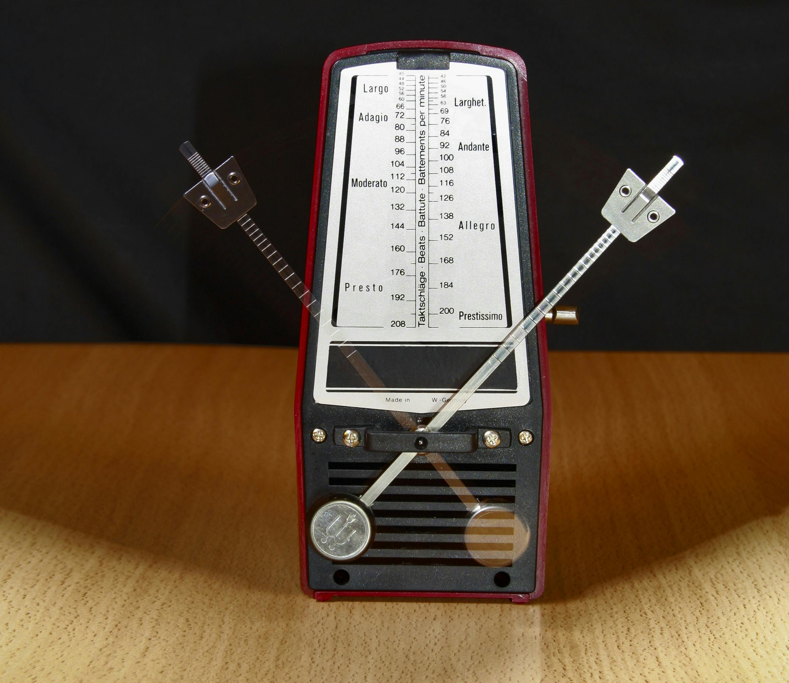

Geschichte der Ukulele: Vom Inselinstrument zum Weltstar
Die Ukulele ist mehr als nur ein Instrument – sie ist ein Symbol für
Aloha, Lebensfreude und Entspannung. Ihre Geschichte beginnt mit
portugiesischen Einwanderern und führt über Hawaii in die ganze
Welt.
Die Wurzeln: Portugal und die Machete
Die Ukulele stammt ursprünglich von kleinen portugiesischen
Saiteninstrumenten wie der Machete, der
Cavaquinho und der Rajão ab, die
im 19. Jahrhundert von Madeira nach Hawaii gebracht wurden. Im Jahr
1879 kamen portugiesische Immigranten, darunter die Möbeltischler
Manuel Nunes, José do Espírito Santo und Augusto Dias, nach Hawaii,
um auf den Zuckerrohrplantagen zu arbeiten. Sie brachten ihre
Instrumente mit und begannen, Ukulelen in Hawaii herzustellen und zu
spielen. Der Name "Ukulele" bedeutet auf Hawaiianisch "hüpfender
Floh" – eine Anspielung auf die flinke Bewegung der Finger beim
Spielen oder möglicherweise auf den englischen Offizier Edward
Purvis, dessen lebhafte Spielweise diesen Spitznamen inspirierte.
Die Ukulele auf Hawaii: Königliches Instrument
Die Ukulele wurde schnell zum Symbol der hawaiianischen Musik und
Kultur. König David Kalākaua, der letzte König von Hawaii (reg.
1874-1891), war ein großer Förderer hawaiianischer Kultur und Musik.
Er liebte die Ukulele und machte sie gesellschaftsfähig. Auch seine
Schwester und Nachfolgerin, Königin Liliʻuokalani, spielte Ukulele
und komponierte zahlreiche Lieder, darunter das berühmte "Aloha
ʻOe". Die typische Bauweise mit vier Nylon- oder Darmsaiten und dem
kleinen Korpus aus Koa-Holz sorgt für den charakteristischen,
fröhlichen und warmen Klang, der heute weltweit mit Hawaii
assoziiert wird.
Die Ukulele erobert die Welt (1915-1960)
Anfang des 20. Jahrhunderts gelangte die Ukulele in die USA und
wurde dort in Jazz, Vaudeville und später auch in Ragtime und
Pop-Musik eingesetzt. Bei der Panama-Pacific Exposition 1915 in San
Francisco stellte die Hawaiian Pavilion die Ukulele einem
Millionenpublikum vor, was einen ersten Boom auslöste. In den 1920er
Jahren wurde sie zum Modeinstrum ent in den USA – jeder wollte
Ukulele spielen! Stars wie
Cliff Edwards ("Ukulele Ike") machten das
Instrument populär. In den 1950er Jahren erlebte die Ukulele einen
zweiten Boom durch Fernsehshows und Stars wie
Arthur Godfrey und Tiny Tim, der
mit seiner Falsett-Stimme und Ukulele-Begleitung "Tiptoe Through the
Tulips" berühmt machte.
Die Ukulele heute: Renaissance durch YouTube & Social Media
In den letzten 20 Jahren erlebte die Ukulele eine weltweite
Renaissance, getrieben von YouTube, Instagram und TikTok. Künstler
wie Jake Shimabukuro zeigten mit virtuosen
Interpretationen ("While My Guitar Gently Weeps"), dass die Ukulele
weit mehr als ein Anfängerinstrument ist. Musiker wie
Grace VanderWaal,
Eddie Vedder (Pearl Jam) und
Billie Eilish schrieben Hits auf der Ukulele. Heute
ist die Ukulele ein beliebtes Einstiegsinstrument für Kinder und
Erwachsene. Sie ist leicht zu lernen, preiswert, tragbar und
vielseitig. Von Klassik bis Pop, von Solo bis Band – die Ukulele
begeistert durch ihren warmen, fröhlichen Klang und ihre
unkomplizierte Spielweise. Ukulele-Festivals, Meetups und
Online-Communities verbinden Millionen von Spielern weltweit.
Ikonen der Ukulele: Berühmte Spieler
Von Hawaii bis Hollywood – diese Künstler zeigen, wie vielseitig die
kleine Vier-Saiterin sein kann und wie sie Leben und Karrieren
prägte.
Israel Kamakawiwoʻole (1959-1997)
„IZ", wie er liebevoll genannt wurde, wurde in Honolulu geboren und
wuchs in Kaimuki auf. Mit 10 Jahren begann er, Musik zu machen, und
mit 11 gründete er mit seinem Bruder Skippy die Band Makaha Sons of
Niʻihau, die hawaiianische Traditionen mit modernen Einflüssen
verband. IZ setzte sich sein Leben lang für hawaiianische Kultur,
Sprache und politische Eigenständigkeit ein. Seine warme, sanfte
Stimme und minimalistische Ukulele-Begleitung machten ihn zum Symbol
für Aloha-Spirit weltweit. Sein berühmtes Medley „Somewhere Over the
Rainbow/What a Wonderful World" nahm er 1988 nachts im Studio in nur
einem Take um 3 Uhr morgens auf – der Toningenieur hatte extra für
ihn das Studio geöffnet. IZ verstarb 1997 mit nur 38 Jahren an den
Folgen seiner Fettleibigkeit, doch sein musikalisches Vermächtnis
lebt weiter. Sein Medley wurde in unzähligen Filmen, TV-Serien und
Werbespots verwendet und ist eines der meistgestreamten Lieder
weltweit.
Hör dir das legendäre Medley an:

Jake Shimabukuro (geb. 1976)
Jake Shimabukuro wurde in Honolulu geboren und lernte mit vier
Jahren von seiner Mutter Ukulele spielen. Beeinflusst von
Gitarristen wie Jimi Hendrix und Eddie Van Halen, entwickelte er
einen innovativen, virtuosen Stil, der Jazz, Rock, Blues, Funk und
klassische Musik kombiniert. 2006 ging sein YouTube-Clip zu „While
My Guitar Gently Weeps" (George Harrison/The Beatles) viral und
machte ihn international bekannt. Seitdem tourte er weltweit,
spielte mit Orchestern, trat bei TEDx auf, spielte für US-Truppen
und sogar im Weißen Haus. Jake ist einer der wichtigsten Botschafter
des Instruments und zeigt, dass die Ukulele technisch anspruchsvolle
Musik spielen kann. Er spielt oft auf einer 4-saitigen Tenor-Ukulele
und nutzt Techniken wie Tapping, Harmonics und Slapping.
Virtuose Interpretation von „While My Guitar Gently Weeps":
Grace VanderWaal (geb. 2004)
Grace VanderWaal wurde in Kansas geboren und zog als Kind mit ihrer
Familie nach New York. Mit 11 Jahren bekam sie ihre erste Ukulele
und begann, eigene Songs zu schreiben. Mit zwölf Jahren gewann sie
2016 die 11. Staffel von „America's Got Talent" mit
selbstgeschriebenen Songs und ihrer einzigartigen, rauchigen Stimme.
Ihr Gewinner-Song „I Don't Know My Name" wurde zum viralen Hit.
Seitdem veröffentlichte sie mehrere Alben, tourte weltweit, spielte
in Filmen mit (u.a. "Stargirl" 2020) und ermutigt junge Fans, ihre
kreative Stimme zu finden und authentisch zu sein. Grace gestaltet
ihre Ukulelen gern selbst mit handgemalten Designs, Aufklebern und
persönlichen Motiven. Sie zeigt, dass man mit Ukulele und
Authentizität auch in der modernen Pop-Welt erfolgreich sein kann.
Ihr Gewinner-Auftritt mit „I Don't Know My Name":
Eddie Vedder (geb. 1964)
Der Pearl-Jam-Sänger Eddie Vedder wurde in Illinois geboren und
wuchs in Kalifornien auf. Er sammelte bereits als Teenager alte
Ukulelen, fasziniert von ihrer Einfachheit und ihrem warmen Klang.
Die Ukulele wurde für ihn ein Zufluchtsort und ein Weg, intime,
persönliche Songs zu schreiben, fernab der lauten Rock-Bühnen. 2011
veröffentlichte er das Album „Ukulele Songs", auf dem er nur mit
Ukulele begleitete Lieder über Liebe, Leben und Verlust singt. Das
Album zeigt, wie tiefgründig, emotional und kraftvoll das Instrument
klingen kann. Eddie spielt oft auf einer Vintage-Martin oder Kamaka
Ukulele und tauscht auf Tourneen seltene Modelle gern mit Fans. Sein
Stil ist schlicht, aber ausdrucksstark – die Ukulele dient als
perfekte Begleitung für seine raue, ehrliche Stimme.
Live-Version von „Can't Keep" auf der Ukulele:
Billie Eilish (geb. 2001)
Billie Eilish Pirate Baird O'Connell wuchs in Los Angeles in einer
kreativen Künstlerfamilie auf. Sie und ihr Bruder Finneas wurden
zuhause unterrichtet und wuchsen mit Musik auf. Ihre ersten Songs
schrieb Billie auf der Ukulele, bevor sie weltweit mit
minimalistischem Electro-Pop die Charts eroberte. Ihr Durchbruch-Hit
„Ocean Eyes" startete als Ukulele-Demo, das sie mit 13 Jahren im
Kinderzimmer aufnahm und auf SoundCloud hochlud. Die Ukulele half
ihr, Melodien und Songstrukturen zu entwickeln, bevor sie mit
Finneas im Homestudio produzierten. Billie nutzt die Ukulele auch
bei Akustik-Sets und Songwriting-Sessions. Sie zeigt, dass die
Ukulele ein mächtiges Werkzeug für Songwriting und Kreativität ist –
egal, in welche Richtung man später geht.
Die frühe „Ocean Eyes"-Ukulele-Version hören:
Berühmte Songs & Akkorde zum Lernen
Hier sind einige zeitlose Songs, die sich hervorragend für den
Einstieg eignen. Wir haben dir die besten Anfänger-Versionen auf
Ultimate Guitar verlinkt – eine fantastische Ressource zum Üben.
| Song |
Künstler |
Warum er sich lohnt |
Link |
| Somewhere Over the Rainbow |
Israel Kamakawiwoʻole |
Der Ukulele-Klassiker schlechthin! Einfache Akkorde (C, Em,
F, G), wunderschöne Melodie.
|
|
| Riptide |
Vance Joy |
Der moderne Ukulele-Hit! Nur 3 Akkorde (Am, G, C), perfekt
für Anfänger und klingt sofort gut.
|
|
| I'm Yours |
Jason Mraz |
Sommerfeeling garantiert! Entspannter Reggae-Rhythmus mit
einfachen Akkorden (C, G, Am, F).
|
|
| Can't Help Falling in Love |
Elvis Presley |
Ein zeitloser Klassiker. Romantisch und bei Hochzeiten
beliebt. Einfache Akkorde, schöne Melodie.
|
|
| Count on Me |
Bruno Mars |
Ein Gute-Laune-Song über Freundschaft. Einfache Akkordfolge,
positiver Vibe.
|
|
Bonus-Tipp: Die "magische" 4-Akkord-Folge
C – G – Am – F funktioniert für hunderte von
Pop-Songs! Mit diesen vier Akkorden kannst du schon unzählige Hits
spielen.
Ausrüstung: Dein Weg zur perfekten Ukulele
Die Welt der Ukulelen ist vielfältig, aber überschaubar. Hier ist
der ultimative Guide für alles, was du am Anfang wissen musst und
worauf du achten solltest.
1. Ukulelen-Typen: Sopran, Konzert, Tenor & Bariton
Ukulelen gibt es in verschiedenen Größen, die sich in Klang,
Spielbarkeit und Tonumfang unterscheiden:

-
Sopran-Ukulele (ca. 53cm): Die klassische,
kleinste Ukulele. Typischer, heller "Ukulele-Sound".
Standard-Stimmung: G-C-E-A (mit hohem G). Perfekt für Kinder und
den klassischen hawaiianischen Klang, aber durch die geringe Größe
etwas schwieriger für große Hände. Budget: ab 30€ (besser: ab
60€).
-
Konzert-Ukulele (ca. 58cm): Etwas größer als
Sopran, mit mehr Bünden und vollerem Klang. Noch portabel, aber
komfortabler zu spielen. Ideal für Erwachsene und
Fortgeschrittene. Die beliebteste Größe für Anfänger! Budget: ab
50€ (besser: ab 80€).
-
Tenor-Ukulele (ca. 66cm): Noch größer, mit noch
vollerem, wärmerem Klang. Mehr Platz zwischen den Bünden, perfekt
für Solospiel und Fingerpicking. Wird oft von Profis bevorzugt
(z.B. Jake Shimabukuro). Budget: ab 100€ (besser: ab 150€).
-
Bariton-Ukulele (ca. 76cm): Die größte Ukulele,
gestimmt wie die obersten 4 Saiten einer Gitarre (D-G-B-E). Klingt
tiefer, gitarrenähnlicher. Perfekt für Gitarristen, die auf
Ukulele umsteigen. Budget: ab 120€.
2. Material & Holz: Was macht den Unterschied?
-
Koa-Holz: Das traditionelle hawaiianische Holz.
Warm, ausgewogen, mit schönem Klang. Teurer, aber wunderschön.
Wird mit der Zeit besser! (ab 300€)
-
Mahagoni: Warmer, weicher Klang. Häufig bei
preiswerten und mittleren Ukulelen. Sehr beliebt! (ab 60€)
-
Fichte (Spruce): Hell, brillant, laut. Oft für
die Decke verwendet. Perfekt für Strumming. (ab 80€)
-
Akazie/Ahorn: Heller Klang, gute Projektion. Oft
bei günstigen Instrumenten. (ab 50€)
-
Laminat vs. Massivholz: Laminat ist günstiger und
robuster, aber Massivholz klingt besser und reift mit der Zeit.
Für Anfänger reicht Laminat, Fortgeschrittene sollten zu
Massivholz greifen.
3. Saiten: Nylon, Fluorocarbon & Co.
Die Saiten haben großen Einfluss auf Klang und Spielgefühl:
-
Nylon-Saiten: Weich, warm, klassisch. Standard
bei den meisten Ukulelen. Günstig und angenehm zu spielen.
-
Fluorocarbon-Saiten: Klarer, brillanter Klang.
Langlebiger und stimmstabiler als Nylon. Beliebt bei
Fortgeschrittenen. Etwas teurer. (Empfehlung: Aquila Nylgut,
D'Addario Pro-Arté)
-
Saitenwechsel: Alle 3-6 Monate wechseln, je nach
Spielhäufigkeit. Neue Saiten brauchen ein paar Tage, um sich zu
setzen und stimmstabil zu werden.
4. Zubehör: Das brauchst du noch

-
Stimmgerät: ABSOLUTES MUSS! Eine verstimmte
Ukulele klingt schrecklich. Clip-Tuner (ca. 10-15€) sind perfekt.
Alternativ: Stimm-Apps (z.B. "GuitarTuna" kostenlos).
-
Gigbag/Tasche: Schützt deine Ukulele beim
Transport. Es gibt gepolsterte Gigbags ab 15€ und Hardcases ab
40€.
-
Gurt: Für komfortables Spielen im Stehen.
Ukulele-Gurte sind dünn und leicht (ab 5€).
-
Kapodaster: Verändert die Tonhöhe, ohne andere
Griffe lernen zu müssen. Hilfreich, um mit Sängern zusammen zu
spielen. (ab 5€)
-
Notenständer: Für Notenblätter und Songbooks. (ab
15€)
-
Plektren (Picks): Optional. Manche bevorzugen
Fingerpicking, andere nutzen dünne Filz-Picks. Einfach
ausprobieren!
5. Empfehlenswerte Marken & Kauftipps
-
Einsteiger (50-150€): Kala, Mahalo, Lanikai,
Flight, Ortega, Baton Rouge. Diese Marken bieten gute Qualität für
kleines Geld.
-
Mittelklasse (150-400€): Kala (höhere Modelle),
Cordoba, Pono, Ohana, Kanile'a. Massivholz, bessere Verarbeitung,
deutlich besserer Klang.
-
Profi (ab 400€): Kamaka, KoAloha, Martin,
Kanile'a Custom, G-String. Handarbeit, Koa-Holz, für Sammler und
Profis.
-
Kauftipp: Teste mehrere Ukulelen im Geschäft!
Jede klingt anders. Achte auf saubere Verarbeitung (keine scharfen
Bünde), gute Stimmstabilität und angenehmes Spielgefühl.
-
Online kaufen: Günstiger, aber du solltest die
Marke/das Modell vorher angespielt haben. Achte auf gute
Rückgaberechte!
6. Pflege & Wartung
Ukulelen mögen keine Extreme: Keine direkte
Sonneneinstrahlung, keine Hitze (Auto!), keine extreme Kälte oder
Feuchtigkeit. Ideal: 18-22°C, 40-60% Luftfeuchtigkeit.
Reinigung: Mit leicht feuchtem Tuch abwischen.
Keine aggressiven Reinigungsmittel! Griffbrett kann man mit
Zitronenöl pflegen.
Saiten: Nach dem Spielen kurz abwischen, um
Handschweiß zu entfernen – das verlängert die Lebensdauer.